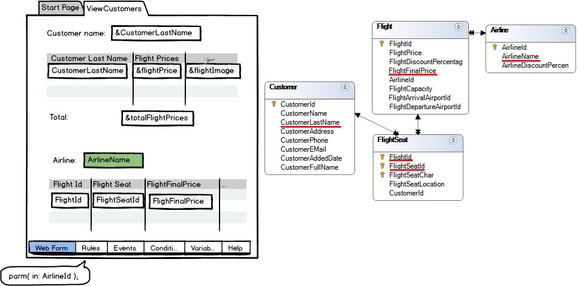
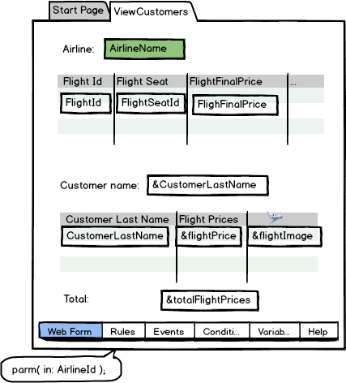

The attributes involved in determining the base table for each grid are:
The attributes of the fixed part of the form will take part in determining the base table of the first grid (according to location on the form) exactly as if there were no others grids (web panel with only one grid). The attributes used in the Web Panel events outside the For Each commands do not take part in determining the base table of any grid (except in the case of the Load event of any of the grids, where they do participate in determining its base table), but must belong to the extended table of one. ExampleSuppose we have a web panel with 2 grids. In the first one, we want lo load customer data, and in the second one the flights of the airline received by parameter into the attribute (AirlineId):  Since the airline is the same for each flight listed, we could try inserting the AirlineName attribute into the fixed part of the form. But this will cause the fist grid base table to change from Customer to FlightSeat, the one whose extended contains CustomerLastName and AirlineName. This will happen because the attributes in fixed part of the form will be associated to the first grid present on the screen, as explained. If we change the order of the grids on the form, the behavior will be the one expected, that is: the AirlineName will take part in determining the Flight grid and not in the Customer grid. 
If we cannot change the order of grids, we must use a variable based on AirlineName attribute, rather than the attribute itself. Therefore, we will have to load the variable.
|